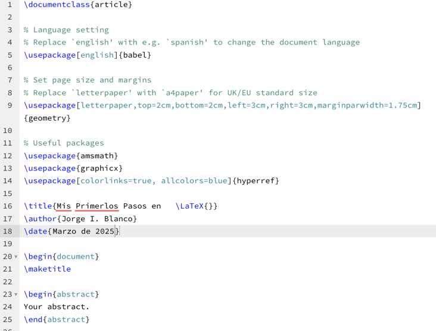

<div class="row">
    <div class="col-md-12 p-4">
        <h1 class="animate__animated animate__flip animate__delay-1s" style="text-align: center; color: #7d1541;">CREACIÓN DE TABLAS</h1>
        <div class="row mt-4 d-flex align-items-center">
            <div class="col-md-6">
                <p class="texto animate__animated animate__flipInY animate__delay-4s">
                    <b>Pasos:</b>
                    Uso del entorno table y comandos para organizar datos en tablas. <!-- <b>&sigma; = E&epsilon;</b> -->
                </p>
                <p class="texto animate__animated animate__fadeInUp animate__delay-4s">
                    <b>Ejemplo:</b>Crear una tabla de datos técnicos con encabezados y líneas horizontales.
                </p>
            </div>
            <div class="col-md-6">
                
            </div>
        </div>
    </div>
</div>